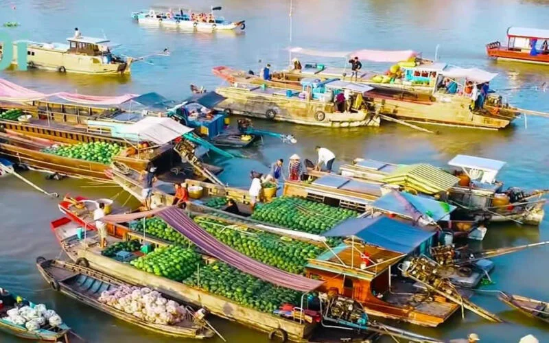
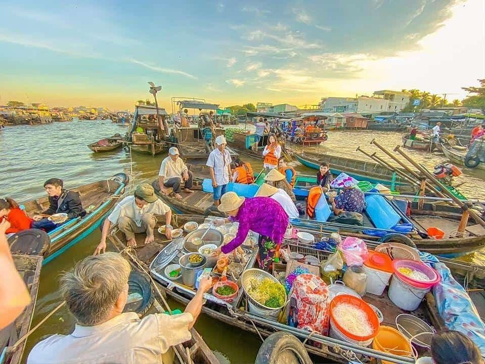
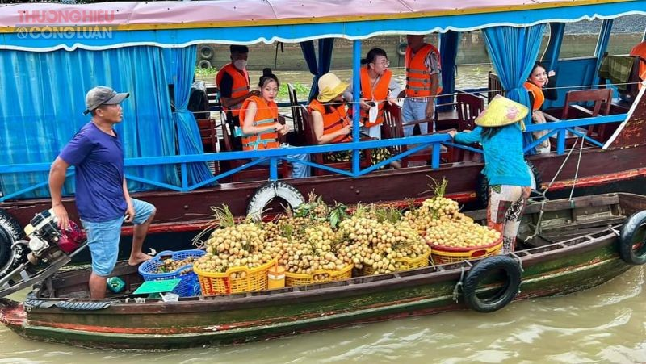
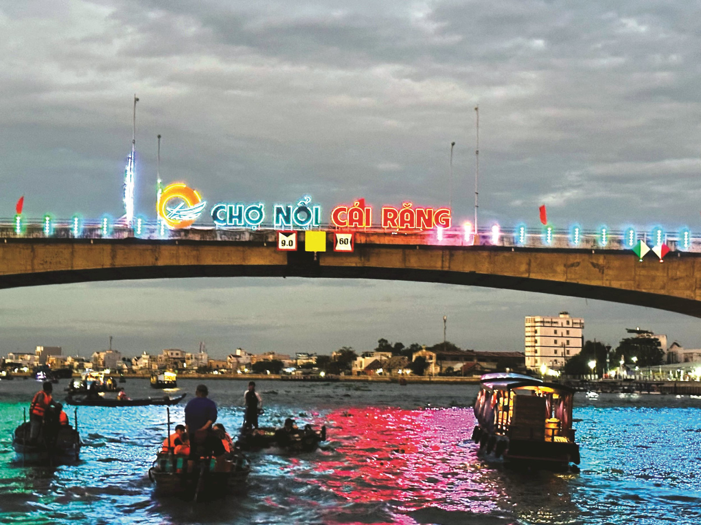

Hình Ảnh Nổi Bật




Giới Thiệu
Chợ nổi Cái Răng nằm trên sông Cái Răng, cách trung tâm thành phố Cần Thơ khoảng 6 km, là khu chợ nổi tiếng nhất và lớn nhất khu vực Đồng bằng sông Cửu Long, chuyên mua bán các loại trái cây, nông sản.
Hoạt động mua bán tại chợ diễn ra từ khoảng 5 giờ đến 8-9 giờ sáng. Mỗi ghe thuyền thường treo một cây "bẹo hàng" trước mũi để giới thiệu loại nông sản đang bán, tạo nên nét độc đáo riêng có của chợ nổi miền Tây.
Du khách có thể thuê thuyền nhỏ từ bến Ninh Kiều để tham quan chợ nổi, kết hợp thưởng thức bún riêu, hủ tiếu hay cà phê ngay trên ghe giữa khung cảnh sông nước nhộn nhịp.
Thông Tin Tham Quan
- Địa chỉ: Quận Cái Răng, Thành phố Cần Thơ
- Giờ hoạt động: 05:00 - 09:00
- Giá vé tham quan: Miễn phí (tính phí thuê thuyền riêng)
- Cách di chuyển: Thuyền từ Bến Ninh Kiều, khoảng 30 phút